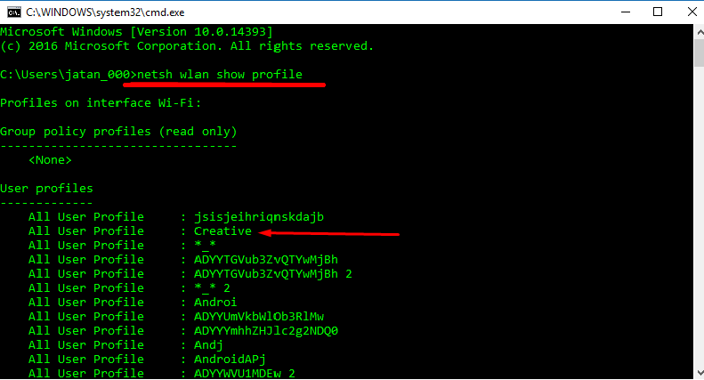
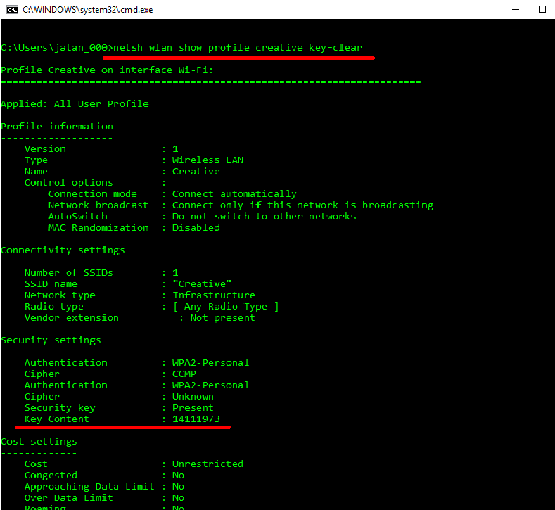

know Wi-Fi passwords using CMD
How To Find Passwords of All Connected Wi-Fi Networks using CMD?
So friends talking about Windows, whenever you try to connect to any Wifi Network with the Password/Primary Key, Windows OS on the other hand saves this password along with other details into a file and stores it on the computer disk. Whenever a new Wifi Network to tried by the user this file is updated.
Using Windows Command Prompt(CMD) you can get the list of successful Wifi connections your pc/laptop has made alongwith Passwords and other details.
Following are the steps to get above said list:
1. Open CMD in Adminitrator mode.
2. Type "netsh wlan show profile" and hit Enter Key.
3. Type "netsh wlan show profile WIFI_NAME key=clear" and hit Enter Key.
(Note: Type above two commands without quotes and put your required wifi name in place of WIFI_NAME before hitting the Enter in Step 3).
Under security settings, in key content, you can see the Wi-Fi password for the desired network.
Here is how it looks like:

